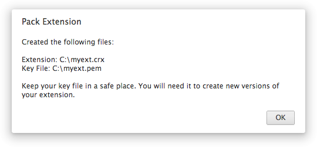

Extensions are packaged as signed zip files with the file extension "crx" (eg myextension.crx). Each extension has its own unique key pair. The public key is used as the unique identifier for the extension and the private key is kept private and used to sign each version of the extension.
Packaging an Extension
To package an extension:
- Close all your Chrome windows
- Open a command line and type:
<path-to-chrome>\chrome.exe --pack-extension=<path\to\extension\folder>

Note
- In Windows XP, you can find by right-clicking on your Google Chrome shortcut and selecting Properties -> Shortcut and then pressing Find Target.
- In Vista, you can do the same by right-clicking your Google Chrome shortcut and selecting Open File Location.
The packager creates two files: a crx file (myextension.crx), which is the actual extension that can be installed, and a private key (myextension.pem). You should keep the private key secret and in a safe place.
IMPORTANT: Do not lose the private key. You will need it later for two things
- If you want to create a new version of the extension, you'll need the original private key (see below).
-
- In the future, Google will implement a gallery service for extensions. You'll need your private key if you want to import an existing extension into that gallery.
Updating an Extension
To create an updated version of your extension:
- Increase the version number in manifest.json
- Close all your Chrome windows
- Run \chrome.exe --pack-extension= --pack-extension-key=, specifying the private key file you created earlier for the second parameter.
If the updated extension is successfully packaged, you'll see a dialog like this

Tips and Tricks
- In build 3.0.195 and later, you can use the --no-message-box command line flag to suppress the dialog. This is useful if you're packing extensions in non-interactive scripts.